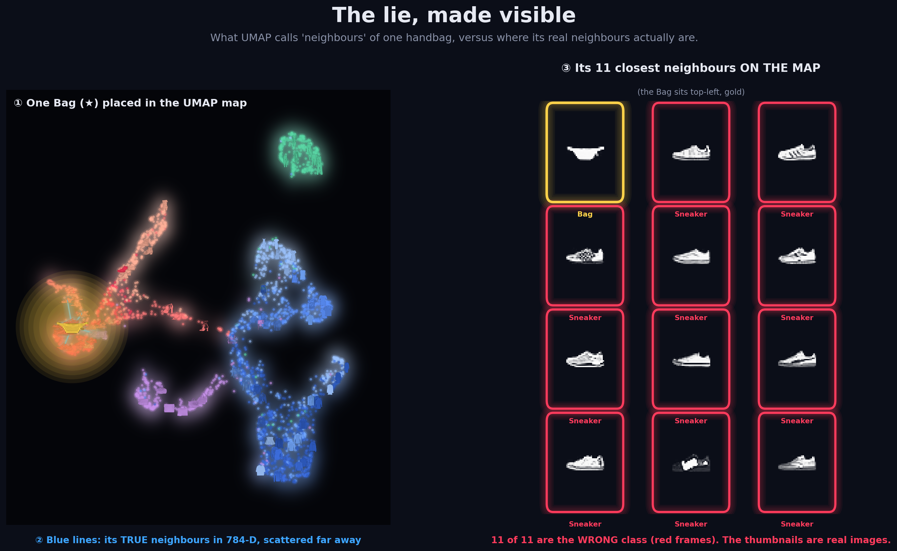

An interactive diagnosis of distortion in high-dimensional visualization ·
Fashion-MNIST (784-D) · 6 projection methods · Data Visualization Final Project
The hero shot. One Bag (★) and the neighbors UMAP invents around it.
The thumbnails are real images — see how the 11 garments the map glued next to it
are obviously different (all sneakers), while its TRUE 784-D neighbors are flung across
the galaxy. Pretty map on the left, the truth on the right.

What to do:Click any point in any of the six maps — gold star marks it,
blue lines connect to its TRUE 784-D neighbors,
red lines to its FALSE (map-only) neighbors.
Then lasso-select a cluster in one map (drag with lasso tool) — the same
points light up in all six maps simultaneously, exposing how a tight cluster in
t-SNE scatters apart in PCA.
The same 784-D data, six ways to flatten it. Hover a point to see its class and
distortion counts. Notice how PCA/MDS blur everything together while t-SNE/UMAP
carve sharp islands — but sharper is not the same as truer.
Press ▶ Play or drag the slider. As t-SNE's perplexity sweeps 5→100,
the shape — and the story it tells — changes completely, yet trustworthiness barely
moves (~0.98). There is no single "correct" picture, only a picture at one setting.